Галерея
165 портретов
 Конрад Поттер Айкен1889 — 1973
Конрад Поттер Айкен1889 — 1973 Мэтью Арнольд1822 — 1888
Мэтью Арнольд1822 — 1888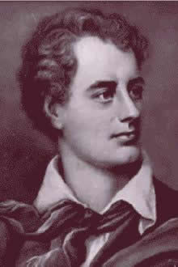
Джордж Гордон Байрон1788 — 1824 Уильям Барнес1801 — 1886
Уильям Барнес1801 — 1886 Самюэль Батлер1835 — 1902
Самюэль Батлер1835 — 1902 Томас Ловел Беддоуз1803 — 1849
Томас Ловел Беддоуз1803 — 1849 Хилари Беллок1870 — 1953
Хилари Беллок1870 — 1953 Стелла Бенсон1892 — 1933
Стелла Бенсон1892 — 1933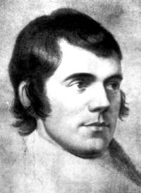
Роберт Бернс1759 — 1796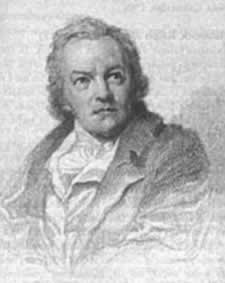
Уильям Блейк1757 — 1827 Уильям Лайл Боулз1762 — 1850
Уильям Лайл Боулз1762 — 1850 Томас Эдвард Браун1830 — 1897
Томас Эдвард Браун1830 — 1897 Уильям Браун1692 — 1774
Уильям Браун1692 — 1774 Роберт Браунинг1812 — 1889
Роберт Браунинг1812 — 1889 Элизабет Баррет Браунинг1806 — 1861
Элизабет Баррет Браунинг1806 — 1861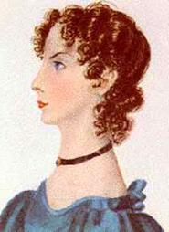
Анна Бронте1820 — 1849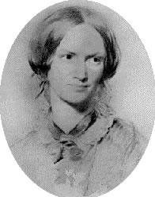
Шарлотта Бронте1816 — 1855 Эмилия Джейн Бронте1818 — 1848
Эмилия Джейн Бронте1818 — 1848 Руперт Брук1887 — 1915
Руперт Брук1887 — 1915 Гвендолин Брукс1917 — 2000
Гвендолин Брукс1917 — 2000 Гамалиель Брэдфорд1860 — 1932
Гамалиель Брэдфорд1860 — 1932 Фрэнсис Бэкон1561 — 1626
Фрэнсис Бэкон1561 — 1626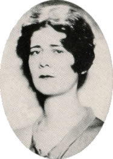
Элинор Вайли1885 — 1928 Чарльз Вольф1791 — 1823
Чарльз Вольф1791 — 1823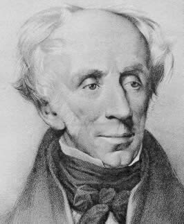
Уильям Вордсворт1770 — 1850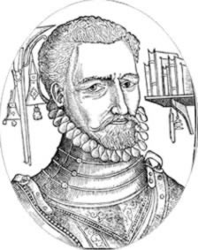
Джордж Гасконь1534 — 1577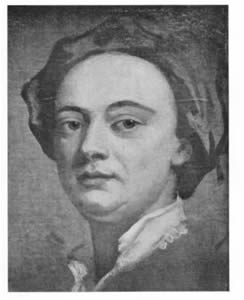
Джон Гей1685 — 1732 Джордж Герберт1593 — 1633
Джордж Герберт1593 — 1633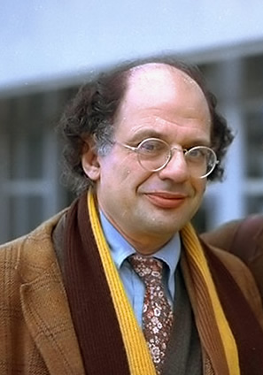
Аллен Гинзберг1926 — 1997 Артур Гитерман1871 — 1943
Артур Гитерман1871 — 1943 Генри Говард, граф Серрей1517 — 1547
Генри Говард, граф Серрей1517 — 1547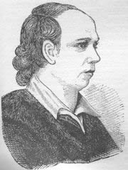
Оливер Голдсмит1730 — 1774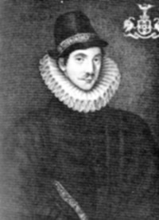
Фулке Гревил1554 — 1628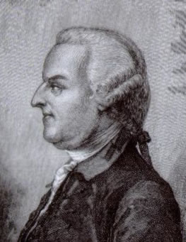
Томас Грей1716 — 1771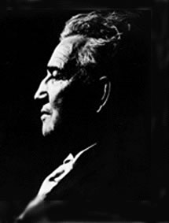
Роберт Грейвз1895 — 1985 Самюэль Даниэль1563 — 1619
Самюэль Даниэль1563 — 1619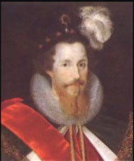
Роберт Девре1566 — 1601 Сесил Дей-Льюис1904 — 1972
Сесил Дей-Льюис1904 — 1972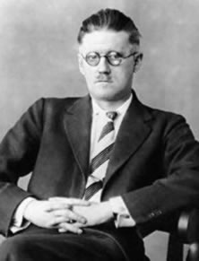
Джеймс Джойс1882 — 1941 Бен Джонсон1572 — 1637
Бен Джонсон1572 — 1637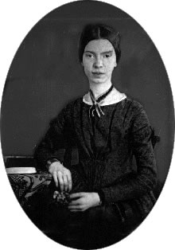
Эмилия Дикинсон1830 — 1886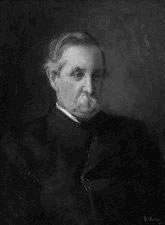
Остин Добсон1840 — 1921- Джон Донн1572 — 1631
 Эрнст Доусон1867 — 1900
Эрнст Доусон1867 — 1900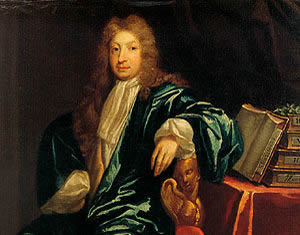
Джон Драйден1631 — 1700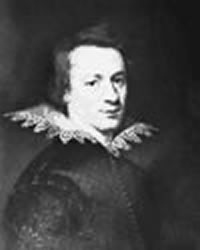
Уильям Драммонд1585 — 1649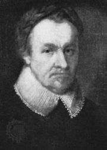
Майкл Дрейтон1563 — 1631 Уильям Генри Дэвис1871 — 1940
Уильям Генри Дэвис1871 — 1940 Уильям Батлер Ейтс1865 — 1939
Уильям Батлер Ейтс1865 — 1939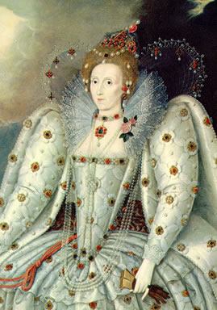
Королева Елизавета I1533 — 1603 Маргарет Кавендиш1623 — 1673
Маргарет Кавендиш1623 — 1673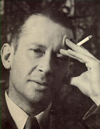
Э.Э. Камингс1894 — 1962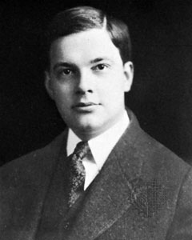
Джойс Килмер1886 — 1918 Генри Кинг1592 — 1664
Генри Кинг1592 — 1664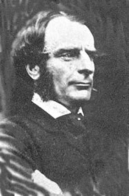
Чарльз Кингсли1819 — 1875 Редьярд Киплинг1865 — 1936
Редьярд Киплинг1865 — 1936 Джон Китс1795 — 1821
Джон Китс1795 — 1821 Артур Хью Клаф1819 — 1861
Артур Хью Клаф1819 — 1861 Джон Клер1793 — 1864
Джон Клер1793 — 1864 Уильям Коллинз1721 — 1759
Уильям Коллинз1721 — 1759 Падраик Колум1881 — 1972
Падраик Колум1881 — 1972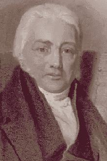
Самюэль Тэйлор Кольридж1772 — 1834 Уильям Конгрив1670 — 1729
Уильям Конгрив1670 — 1729 Уильям Кори1823 — 1892
Уильям Кори1823 — 1892 Абрахам Коули1618 — 1667
Абрахам Коули1618 — 1667 Стефен Крейн1871 — 1900
Стефен Крейн1871 — 1900 Уильям Купер1731 — 1800
Уильям Купер1731 — 1800 Льюис Кэррол1832 — 1898
Льюис Кэррол1832 — 1898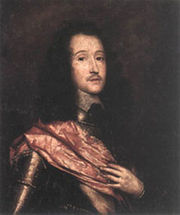
Ричард Лавлэйс1618 — 1657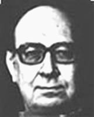
Филипп Ларкин1922 — 1985 Ами Леви1861 — 1889
Ами Леви1861 — 1889 Авраам Линкольн1809 — 1865
Авраам Линкольн1809 — 1865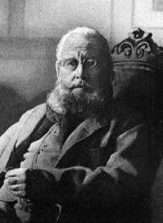
Эдвард Лир1812 — 1888 Джон Гибсон Локхарт1794 — 1854
Джон Гибсон Локхарт1794 — 1854 Генри Водсворд Лонгфелло1807 — 1882
Генри Водсворд Лонгфелло1807 — 1882 Дэвид Герберт Лоуренс1885 — 1930
Дэвид Герберт Лоуренс1885 — 1930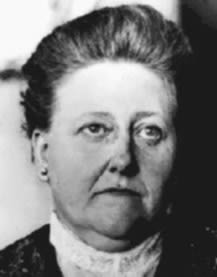
Эми Лоуэл1874 — 1925 Джеймс Рассел Лоуэлл1819 — 1891
Джеймс Рассел Лоуэлл1819 — 1891 Чарльз Лэм1775 — 1834
Чарльз Лэм1775 — 1834 Уолтер Лэндор1775 — 1864
Уолтер Лэндор1775 — 1864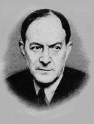
Уолтер Де ла Мар1873 — 1956 Эндрю Марвел1621 — 1678
Эндрю Марвел1621 — 1678 Эдвин Маркхэм1852 — 1940
Эдвин Маркхэм1852 — 1940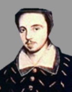
Кристофер Марло1564 — 1593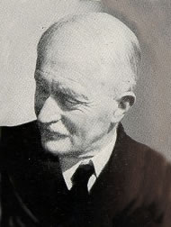
Джон Мейсфилд1878 — 1967 Оуэн Мередит1831 — 1891
Оуэн Мередит1831 — 1891 Эдна Миллей1892 — 1950
Эдна Миллей1892 — 1950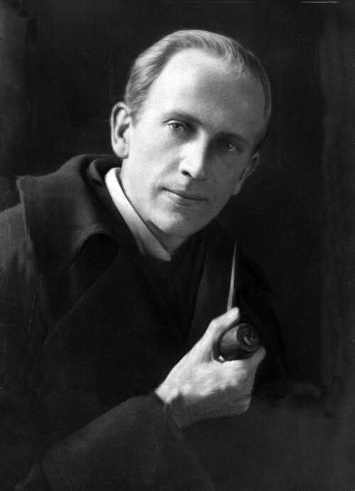
Алан Александр Милн1882 — 1956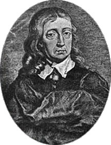
Джон Милтон1608 — 1674 Дом Морес1938 — 2004
Дом Морес1938 — 2004 Кристофер Морли1890 — 1957
Кристофер Морли1890 — 1957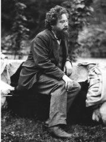
Уильям Моррис1834 — 1896 Томас Мур1779 — 1852
Томас Мур1779 — 1852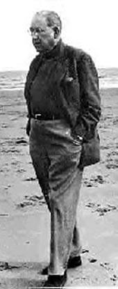
Огден Нэш1902 — 1971 Уистон Хью Оден1907 — 1973
Уистон Хью Оден1907 — 1973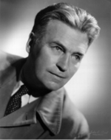
Ричард Олдингтон1892 — 1962 Томас Бейли Олдрич1836 — 1907
Томас Бейли Олдрич1836 — 1907 Альфред Остин1835 — 1913
Альфред Остин1835 — 1913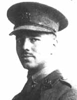
Уилфред Оуэн1893 — 1918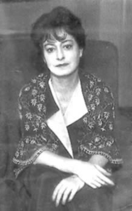
Дороти Паркер1893 — 1967 Ковентри Патмор1823 — 1896
Ковентри Патмор1823 — 1896 Эзра Паунд1885 — 1972
Эзра Паунд1885 — 1972 Кристина Росетти. Песни-песенки1830 — 1894
Кристина Росетти. Песни-песенки1830 — 1894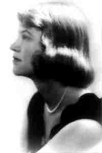
Сильвия Плат1932 — 1963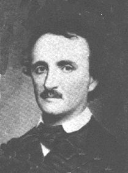
Эдгар По1809 — 1849 Александр Поуп1688 — 1744
Александр Поуп1688 — 1744 Джон Кроув Ренсом1888 — 1974
Джон Кроув Ренсом1888 — 1974 Эдвин Арлингтон Робинсон1869 — 1935
Эдвин Арлингтон Робинсон1869 — 1935 Данте Габриэль Росетти1828 — 1882
Данте Габриэль Росетти1828 — 1882- Кристина Росетти1830 — 1894
 Джон Уилмот Рочестер1647 — 1680
Джон Уилмот Рочестер1647 — 1680 Уолтер Рэли1554 — 1618
Уолтер Рэли1554 — 1618 Джон Саклинг1609 — 1642
Джон Саклинг1609 — 1642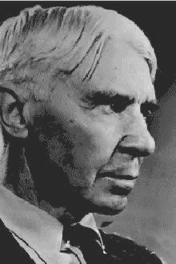
Карл Сандберг1878 — 1967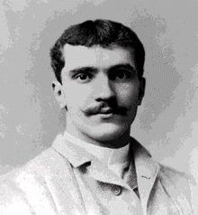
Джордж Сантаяна1863 — 1952 Уильям Саутар1898 — 1943
Уильям Саутар1898 — 1943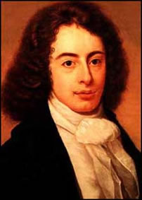
Роберт Саути1774 — 1843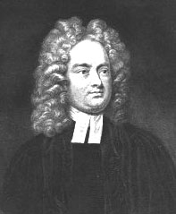
Джонатан Свифт1667 — 1745 Роберт Сервис1874 — 1958
Роберт Сервис1874 — 1958 Филипп Сидни1554 — 1586
Филипп Сидни1554 — 1586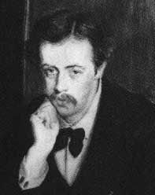
Артур Симонс1865 — 1945 Льюис Симпсонрод. 1923
Льюис Симпсонрод. 1923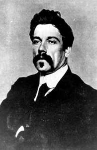
Эдмунд Джон Миллингтон Синж1871 — 1909 Вальтер Скотт1771 — 1832
Вальтер Скотт1771 — 1832 Кристофер Смарт1722 — 1771
Кристофер Смарт1722 — 1771 Чарльз Гамильтон Сорли1895 — 1915
Чарльз Гамильтон Сорли1895 — 1915 Эдмунд Спенсер1552 — 1599
Эдмунд Спенсер1552 — 1599 Роберт Льюис Стивенсон1850 — 1894
Роберт Льюис Стивенсон1850 — 1894 Ричард Генри Стоддард1853 — 1903
Ричард Генри Стоддард1853 — 1903 Алжернон Чарльз Суинбурн1837 — 1909
Алжернон Чарльз Суинбурн1837 — 1909 Рабиндранат Тагор1861 — 1941
Рабиндранат Тагор1861 — 1941 Альфред Теннисон1809 — 1892
Альфред Теннисон1809 — 1892 Сара Тиздэйл1884 — 1933
Сара Тиздэйл1884 — 1933 Джон Р.Р. Толкиен1892 — 1973
Джон Р.Р. Толкиен1892 — 1973 Дилан Томас1914 — 1953
Дилан Томас1914 — 1953 Эдвард Томас1878 — 1917
Эдвард Томас1878 — 1917 Френсис Томпсон1859 — 1907
Френсис Томпсон1859 — 1907 Джеймс Томсон1834 — 1882
Джеймс Томсон1834 — 1882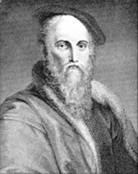
Томас Уайетт1503 — 1542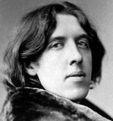
Оскар Уальд1854 — 1900 Уолт Уитмен1819 — 1892
Уолт Уитмен1819 — 1892 Генри Уоттон1568 — 1639
Генри Уоттон1568 — 1639 Анна Финч1661 — 1720
Анна Финч1661 — 1720 Джон Флетчер1579 — 1625
Джон Флетчер1579 — 1625 Роберт Фрост1875 — 1963
Роберт Фрост1875 — 1963- Джеймс Ли Хант1784 — 1859
- Томас Харди1840 — 1928
- Альфред Эдвард Хаусмен1859 — 1936
- Джон Хей1838 — 1905
 Роберт Херрик1591 — 1674
Роберт Херрик1591 — 1674 Герард Мэнли Хопкинс1844 — 1889
Герард Мэнли Хопкинс1844 — 1889 Алек Дервент Хоуп1907 — 2000
Алек Дервент Хоуп1907 — 2000 Томас Худ1799 — 1845
Томас Худ1799 — 1845- Лэнгстон Хьюс1902 — 1967
- Тед Хьюс1930 — 1998
- Джордж Чапмен1559 — 1634
- Гилберт Кейт Честертон1874 — 1936
 Джефри Чосер1342 — 1400
Джефри Чосер1342 — 1400 Уильям Шекспир1564 — 1616
Уильям Шекспир1564 — 1616 Перси Биши Шелли1792 — 1822
Перси Биши Шелли1792 — 1822 Джеймс Ширли1596 — 1666
Джеймс Ширли1596 — 1666- Зоя Эйкинс1886 — 1953
- Томас Стерн Элиот1888 — 1965
 Ральф Уолдо Эмерсон1803 — 1882
Ральф Уолдо Эмерсон1803 — 1882 Маргарет Этвудрод. 1939
Маргарет Этвудрод. 1939